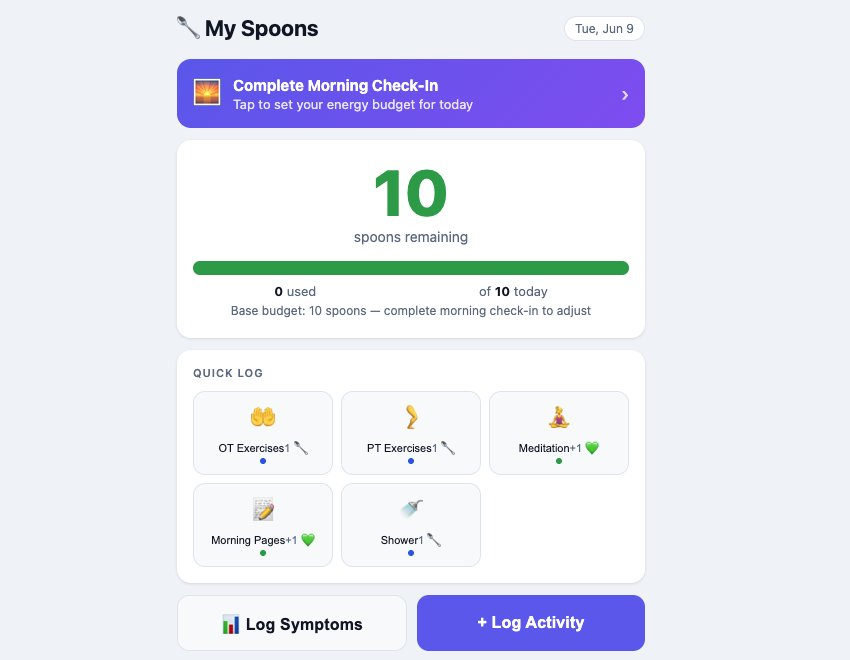

Personal project
Spoon Tracker
I built an energy tracker for myself with AI writing the code, then used it every day for 90 days. I keep reworking it as my needs shift, and it’s become essential to how I pace my life with my disease.